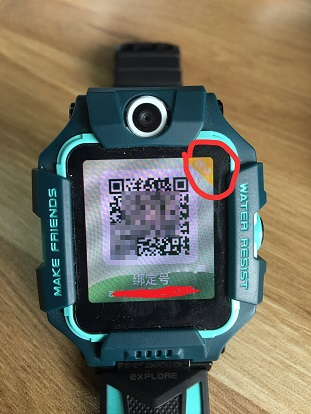

# 常见问题
- 1. 手表怎么开发？
- 2. 什么样数据线才可以调试？
- 3. 手表怎么绑定？
- 4. 日志怎么看？
- 5. 手表怎么连接上 wifi？
- 6. 手机 APP 设置 wifi，手表一直没有连上 wifi？
- 7. ide 提示无法安装？
- 8. Z2、Z3、Z5、Z6 机型开发差异？
- 9. 支不支持网页 webview？
- 10. 手表为什么显示稍后再用？
- 11. 怎么重置系统？
- 12. 手表基础使用逻辑
- 13. 什么时候系统会杀死应用
- 14. 手表 cpu 架构
- 15. 媒体音量调节，是改变系统音量还是应用音量
- 16. 如何改变亮屏时间
- 17. 服务号入口为什么不显示？
- 18. 服务号内获取 openId 接口为什么不返回数据？
- 19. 手表如何查看当前处于什么环境？
- 20. 手表如何切换环境
- 21. 手表申请了 adb 权限，为什么还是不能切环境？
- 22. 如何适配圆角屏幕？
# 1. 手表怎么开发？
手表是 android 系统，不是 android wear，与手机开发无太大差异，按手机开发思维开发，遵循小天才规则即可。
# 2. 什么样数据线才可以调试？
请联系小天才。
# 3. 手表怎么绑定？
手机端下载“小天才”APP，扫描手表上的二维码，按照提示操作即可绑定手表。
# 4. 日志怎么看？
日志会实时打，存在/sdcard/LogCollect 目录下，应用日志打在 main 文件中。
# 5. 手表怎么连接上 wifi？
在手表设置中设置 wifi 或者手表联网绑定条件下，在手机小天才 APP 端设置 wifi，手表收到 push 信息，会自动连上 wifi。
# 6. 手机 APP 设置 wifi，手表一直没有连上 wifi？
手表 push 挂掉了，重启下，触发重连。
# 7. ide 提示无法安装？
不是 android wear，只需加入 main，按手机开发应用方式开发即可。
# 8. Z2、Z3、Z5、Z6 机型开发差异？
无差异。
# 9. 支不支持网页 webview？
支持。
# 10. 手表为什么显示稍后再用？
高温界面，等待手表温度降下来，就可以继续使用了。
# 11. 怎么重置系统？
长按手表实体按钮，出现关机界面后，再次长按手表实体按钮，选择系统修复即可。
# 12. 手表基础使用逻辑
在应用市场下载“小天才”app；注册或登录；打开手表的绑定号 app；手机扫码， 即可绑定手表；绑定后，手机 app 与手表实现互连。
# 13. 什么时候系统会杀死应用
上课禁用、高温、低电、充电、内存不足，会关闭应用。
# 14. 手表 cpu 架构
arm v7 32 位，支持 naive。
# 15. 媒体音量调节，是改变系统音量还是应用音量
表端音量音量统一，不管设置设置哪种StreamType，手表系统最终都是调节系统音量大小，避免进多个应用音量忽大忽小。
建议使用 AudioManager.STREAM_MUSIC
mediaPlayer.setAudioStreamType(AudioManager.STREAM_MUSIC);
# 16. 如何改变亮屏时间
因为单独设置亮屏时间会影响到整机的息屏时间；想延长亮屏时间，可以持锁不息屏，再根据需求释放锁息屏。
# 17. 服务号入口为什么不显示？
提供服务号相关信息至小天才进行配置（测试环境和正式环境都需要配置），具体信息见 应用服务号对接配置信息
# 18. 服务号内获取 openId 接口为什么不返回数据？
- 表端安装的应用版本需要满足支持应用号的最低版本；
- 如果是通过 adb 命令安装的应用，安装完应用需要重启；
- 只显示已经授权了的手表。
# 19. 手表如何查看当前处于什么环境？
打开手表—>找到绑定号—>点击进入绑定号界面—>查看右上角。如果有模块二字，则为测试环境，否则为正式环境。如下图，为测试环境。

# 20. 手表如何切换环境
请联系小天才的同学。
# 21. 手表申请了 adb 权限，为什么还是不能切环境？
- 将手表升至最新版本
- 手表需要被 APP 绑定
- 权限分配后需要重启手表
# 22. 如何适配圆角屏幕？
视觉效果按照 UI 设计来。代码中使用下列方法获取圆角 radius
// 获取顶部圆角 radius
public static int getCornerRadiusTop(Context context) {
int radius = 0;
int resourceId = context.getResources().getIdentifier("rounded_corner_radius_top", "dimen", "android");
if (resourceId > 0) {
radius = context.getResources().getDimensionPixelSize(resourceId);
return radius;
}
//获取底部圆角 radius
public static int getCornerRadiusBottom(Context context) {
int radius = 0;
int resourceId = context.getResources().getIdentifier("rounded_corner_radius_bottom", "dimen", "android");
if (resourceId > 0) {
radius = context.getResources().getDimensionPixelSize(resourceId);
return radius;
}